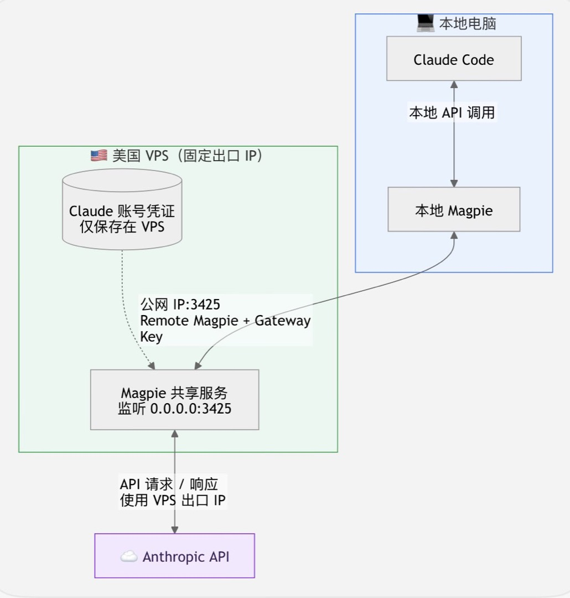
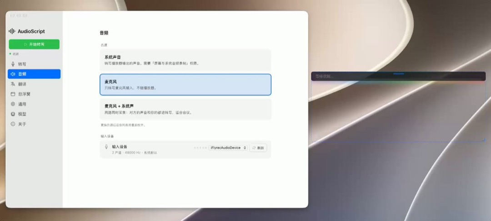
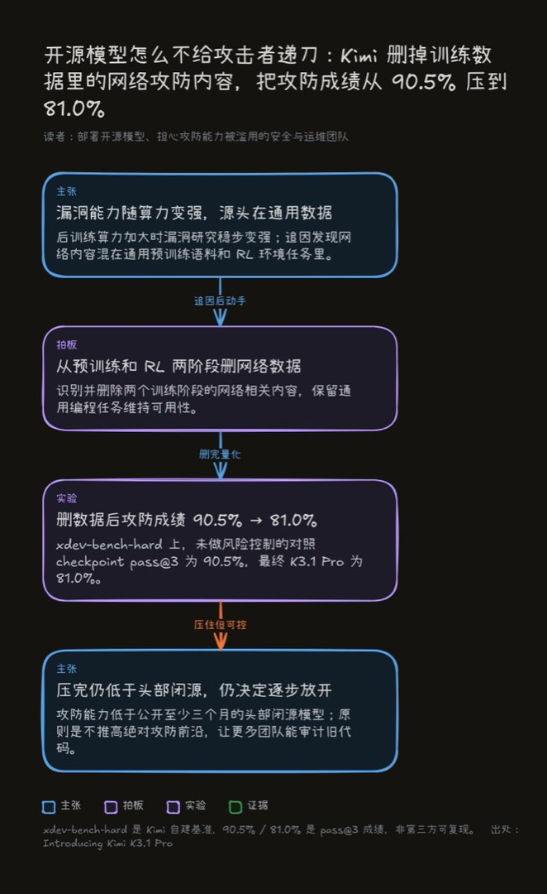
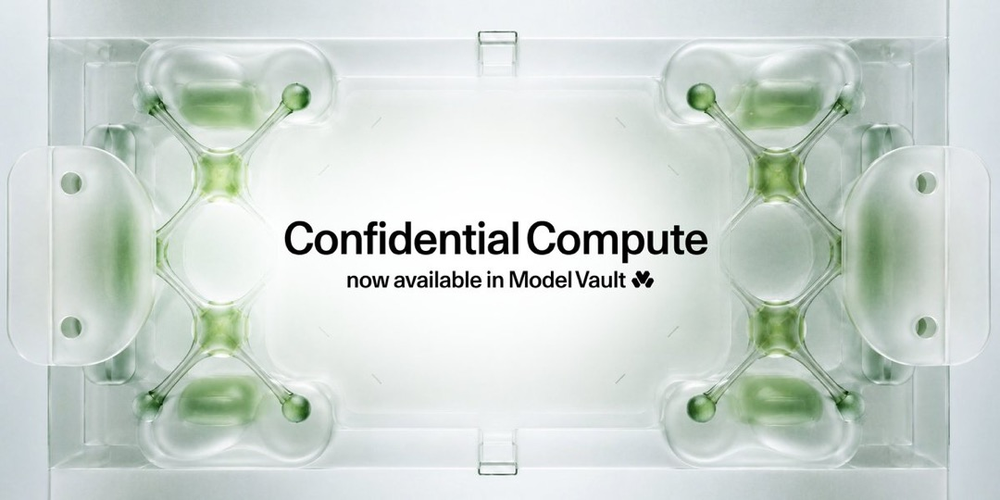
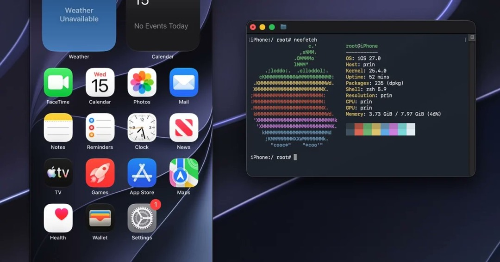
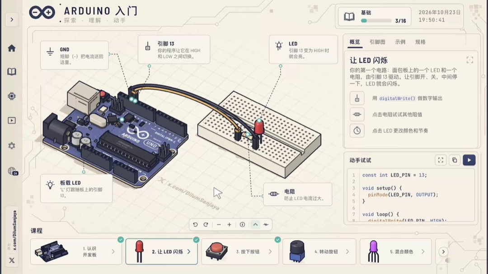
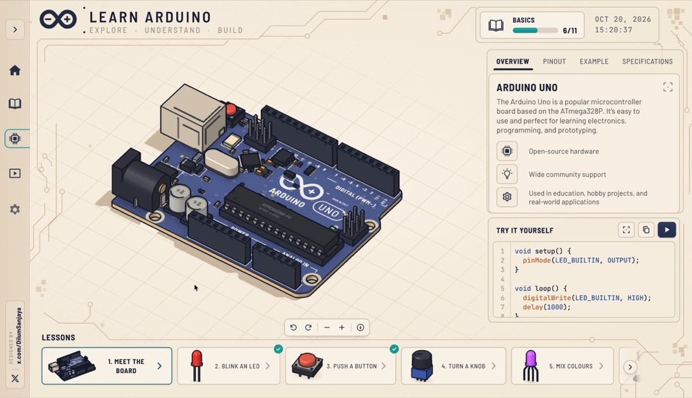

本期速览
02 TradingView MCP量化开发工具
04 AudioScript 系统声音转本地字幕
05 Kimi K3.1 Pro 削减攻防能力
06 Cohere 机密计算保护云端数据
07 vphone-cli 管理虚拟iOS设备
01｜Magpie 远程共享降低封号风险
来源（X） · @vincemask · 2026-10-24 09:51
1.准备一台便宜的美国 VPS，在 VPS 上安装 Magpie，并登录、绑定 Claude 订阅账号。
2.在 VPS 上开启 Magpie 的「局域网共享」，监听 0.0.0.0:3425，通过防火墙开放对应端口，并配置 Gateway Key 鉴权。
3.在本地电脑安装 Magpie，通过「Remote Magpie」添加远程节点，填入：
http://VPS公网IP:3425
同时配置对应的 Gateway Key。
4.本地 Claude Code 连接本地 Magpie，再通过远程 Magpie 调用 VPS 上绑定的 Claude 账号。
最终请求链路
本地 Claude Code
→ 本地 Magpie
→ 美国 VPS 公网 IP:端口
→ VPS Magpie
→ Anthropic API
→ 原路返回
这样一来，Claude 账号的登录凭证保留在美国 VPS 上，模型请求也统一由 VPS 出口 IP 发往 Anthropic。本地机器只通过 Magpie 的远程共享功能调用，不需要直接登录 Claude 账号。

引用内容
Vince 聊开发 @vincemask
中文译文
原文
02｜TradingView MCP量化开发工具
来源（X） · @_zheergen · 2026-10-24 13:45
Codex、Claude Code 不光能分析 K 线，连 Pine Script 开发、策略回测和图表操作都能直接参与！
这个开源项目叫 TradingView Unified MCP，MIT 协议。
它通过本地浏览器连接 TradingView，把行情、指标、策略和图表功能统一开放给 AI Agent 调用。
核心亮点：
1️⃣ AI 操作图表：读取 K 线、切换股票和周期，查询技术指标及图表状态。
2️⃣ Pine Script 开发：读取、修改和编译脚本，辅助排查代码问题。
3️⃣ 策略回测分析：读取 Strategy Tester 报告，分析收益、回撤和交易记录。
4️⃣ AI 量化选股：批量查询行情、技术评级和市场榜单，筛选股票。
5️⃣ 图表与预警管理：支持布局复制、自选股管理和警报配置工作流。
6️⃣ Codex + Claude Code：通过标准 MCP 接入，支持只读模式和操作安全检查。
我觉得最有意思的，是它让 AI 从单纯的行情分析助手，变成了能实际操作 TradingView 的量化开发工具。
比如让 Codex 查询 NVDA 的技术指标，读取 Pine Script 策略，再结合回测报告分析收益和风险。
行情分析 → 策略开发 → 回测研究 → 图表管理。
以前需要在 AI 和 TradingView 之间反复切换，现在不少步骤都能通过 MCP 串起来。
经常使用 Codex、Claude Code、TradingView，或者想用 AI 开发股票量化策略的，这个项目值得研究。
https://github.com/daviddme/TradingView-Unified-MCP
引用内容
爱吃折耳根的Ace @_zheergen
不赌大盘涨跌，专门研究两只股票价差拉开后，重新回归的交易机会。
这个开源项目叫 Pairs Trading With Python。
它基于 Python，把华尔街经典的配对交易策略写成了开源代码，涵盖股票配对筛选、统计分析、交易信号和可视化研究。
核心亮点：
1️⃣ 股票智能配对：通过协整检验，寻找长期价格关系较稳定的股票组合。
2️⃣ 价差交易策略：识别两只股票价格关系的异常偏离，研究回归机会。
3️⃣ Z-Score 信号：利用统计方法判断价差偏离程度，生成买卖条件。
4️⃣ Python 数据分析：结合 Pandas 处理历史行情，计算股票之间的价格关系。
5️⃣ 可视化研究：绘制协整热力图、价差曲线和交易信号，方便分析。
我觉得这套策略最有意思的地方，是它不需要单纯押注某只股票上涨。
比如找到两只长期走势有关联的美股，当它们的价差明显偏离正常范围，就尝试买入相对便宜的一只，同时做空相对昂贵的一只。
等价差重新靠拢，再考虑平仓。
股票筛选 → 配对检验 → 价差分析 → 交易信号。
而且整个研究过程都有 Python 源码和 Jupyter Notebook，可以直接拆解、修改。
做 Python 股票量化、统计套利或者均值回归策略研究的，这套源码值得收藏。
https://github.com/KidQuant/Pairs-Trading-With-Python
03｜ZOTAC CM5-PICO 迷你工业主机
来源（X） · @IPv6dotnet · 2026-10-24 14:09
中文译文
ZOTAC ZBOX PRO CM5-PICO – 一款基于 Raspberry Pi CM5 的紧凑型无风扇工业迷你 PC
https://ipv6.net/news/zotac-zbox-pro-cm5-pico-a-compact-raspberry-pi-cm5-based-fanless-industrial-mini-pc/ #IoT #IPv6 #M2M #InternetOfThings #tech #IoE #news
原文
ZOTAC ZBOX PRO CM5-PICO – A compact Raspberry Pi CM5-based fanless industrial mini PC https://ipv6.net/news/zotac-zbox-pro-cm5-pico-a-compact-raspberry-pi-cm5-based-fanless-industrial-mini-pc/ #IoT #IPv6 #M2M #InternetOfThings #tech #IoE #news
04｜AudioScript 系统声音转本地字幕
来源（X） · @QingQ77 · 2026-10-24 13:51
https://github.com/niyongsheng/AudioScript

05｜Kimi K3.1 Pro 削减攻防能力
来源（X） · @yibie · 2026-10-24 13:35
机制是追出来的。Kimi 发现，随着后训练算力加大，模型的漏洞研究能力稳步变强；追因发现，网络攻防内容混在通用预训练语料和 RL 环境任务里，不是谁专门加的。于是它从预训练和 RL 两个阶段删掉网络相关数据，保留通用编程任务。内部预实验显示，任一阶段不删，下游攻防能力都会大幅上升。
效果用一个内部基准量化：xdev-bench-hard，题目复现 Linux kernel、Node.js、JavaScriptCore、Exim、VirGL 等近期披露的真实漏洞，agent 要写出 exploit、在沙箱里拿到任意代码执行并取回密钥。不删数据的对照 checkpoint 是 90.5%（pass@3），最终模型压到 81.0%，仍低于公开至少三个月的头部闭源模型，但比前代更强。
我的判断：这是一份可量化的开源能力治理样本，它没有靠榜单证明自己安全，而是靠删数据源头加内部基准，给出「压到多少、还差多少」的数字。代价是这套数字全在它自己的题目里成立，90.5% 和 81.0% 是内部测量，不是第三方可复现的成绩。对要审计旧代码的团队，它的说法是：开放权重让更多人能查自己维护的系统，但先把刀磨钝一点再开门。
原文：
https://kimi.ai/blog/kimi-k3-1-pro
#Kimi #开源模型 #AI安全

06｜Cohere 机密计算保护云端数据
来源（X） · @Gorden_Sun · 2026-10-24 13:29
Cohere 推出了机密计算版 Model Vault，让企业在云端调用 AI 时不用担心敏感数据泄露。
很多企业想用大公司的云端 AI 服务，但又不敢把财务报表、医疗记录、核心源代码等机密资料传上去，怕服务商或黑客在后台偷看。
Cohere 联合微软 Azure 与英伟达，基于搭载机密计算技术的英伟达 H100 显卡搭建了防护环境。企业在发送数据前，本地软件会自动核验对方服务器的软硬件是否安全合规，确认无误后才把加密内容发过去。
这样一来，企业的数据从离开自己电脑那一刻起就是全程加密的。数据传到云端后，直接进入芯片划定的一块硬件隔离空间里解密并运行 AI 推理，连 Cohere 官方、微软运维人员以及底层操作系统都无法偷看内存里的明文内容。AI 生成的结果同样会被加密送回。企业既能享受开箱即用的云端算力，又能牢牢守住核心商业隐私。
引用内容
Cohere @cohere
中文译文
Cohere 的 Model Vault 现已进入公测阶段。
借助 @NVIDIAAI 的机密计算（Confidential Computing）以及运行在 @Microsoft Azure 上的 GPU，任何人都可以运行我们的模型，同时确保信息安全。
立即体验：https://cohere.com/blog/introducing-confidential-computing-on-cohere-model-vault
原文
Cohere's Model Vault is now available in public beta.
With @NVIDIAAI Confidential Computing, and GPUs on @Microsoft Azure, anybody can run our models while keeping their information secure.
Try it out today: https://cohere.com/blog/introducing-confidential-computing-on-cohere-model-vault

07｜vphone-cli 管理虚拟iOS设备
来源（X） · @KitPloit · 2026-10-24 13:20
中文译文
vphone-cli v2.12.0 — 在 Apple Silicon 上启动和管理虚拟 iPhone，支持固件补丁、越狱变体以及用于 iOS 测试和分析的安全研究功能。https://ktp.sh/0qlSBP9P0u
原文
vphone-cli v2.12.0 — Boot and manage virtual iPhones on Apple Silicon with firmware patching, jailbreak variants, and security research features for iOS testing and analysis. https://ktp.sh/0qlSBP9P0u

08｜得州起诉OpenAI称ChatGPT有害
来源（X） · @ChineseWSJ · 2026-10-24 13:15
09｜Claude Code 核心开发者离职
来源（X） · @Gorden_Sun · 2026-10-24 13:08
引用内容
Thariq @trq212
中文译文
我在 Anthropic 工作了一年多，负责 Claude Code 的开发，并亲眼见证了它的规模超出我曾有的想象，如今我已离开。
我真的很热爱在 Anthropic 的工作，也深信其使命，尤其是"向上竞赛"（race to the top）这一理念。
这个理念是：如果我们努力且负责任地工作，我们就能提高标准，激励他人取得卓越成果。如果我们都能推动彼此变得更好，事情可以变得非常好。我将永远带着这种精神前行。
我在 Anthropic 的同事们是我见过的最有才华、最有思想、最有能力、也最真诚的人。我很高兴他们在掌舵，我深深地信任他们。
感谢 X 上的社区，感谢你们的一切。你们让这份工作成为我有史以来最有乐趣（有时也有压力）的工作。
对我来说，现在是时候稍作休息，然后再投入新的事业。
如果你想获取更多优质的 Claude Code 内容，你应该关注 @addyosmani、@lydiahallie、_catwu、@ClaudeDevs，当然还有最初开创这一切的 @bcherny。
原文
I’ve left Anthropic after more than a year of working on Claude Code and seeing it scale larger than I ever imagined.
I have really loved working at Ant and believe deeply in the mission, and most of all, the idea of a race to the top.
The idea that if we work hard and responsibly, we can raise the bar and inspire others to great outcomes. And if we all push each other to be better, things can be radically good. I will carry the spirit of this with me forever.
My colleagues at Anthropic are the most talented, thoughtful, competent, and earnest people I have ever met. I am glad they are at the wheel and trust them deeply.
To the community on X, thank you for everything. You’ve made this the most fun (and sometimes stressful) job I’ve ever had.
For me, it is time for a bit of a break before diving into something new.
If you want more excellent Claude Code content, you should follow @addyosmani , @lydiahallie, @_catwu, @ClaudeDevs and of course @bcherny who started it all.
10｜Arduino 交互式3D入门教程网站
来源（X） · @vikingmute · 2026-10-23 19:58
从最简单的认识 Arduino Uno 开发板开始，然后进一步了解各种部件，非常精美，非常开心的把玩了一阵，记得当年也简单玩过一阵，现在这个模拟器交互做的真棒。

引用内容
Dilum Sanjaya @DilumSanjaya
中文译文
硬件看起来很可怕，直到你把它拆解成小步骤。所以我做了一个应用，带你一个电路一个电路地学习 Arduino。
用 Opus 5.5 制作
https://learn-arduino-red.vercel.app
原文
Hardware looks scary until you break it down into small steps. So I built an app that takes you through Arduino one circuit at a time.
Made with Opus 5.5
https://learn-arduino-red.vercel.app

11｜win升级报告 AI写中文更新说明
来源（X） · @appinn · 2026-10-24 13:03
【开源自荐】win升级报告：实时监控 Windows 更新，AI 自动写中文更新说明
https://meta.appinn.net/t/topic/94352